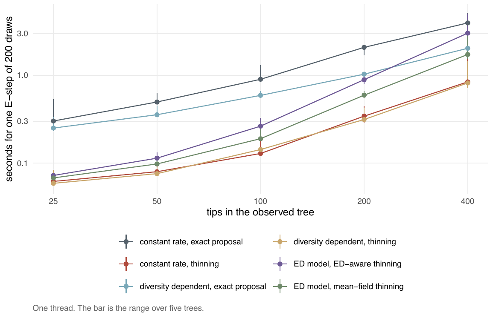
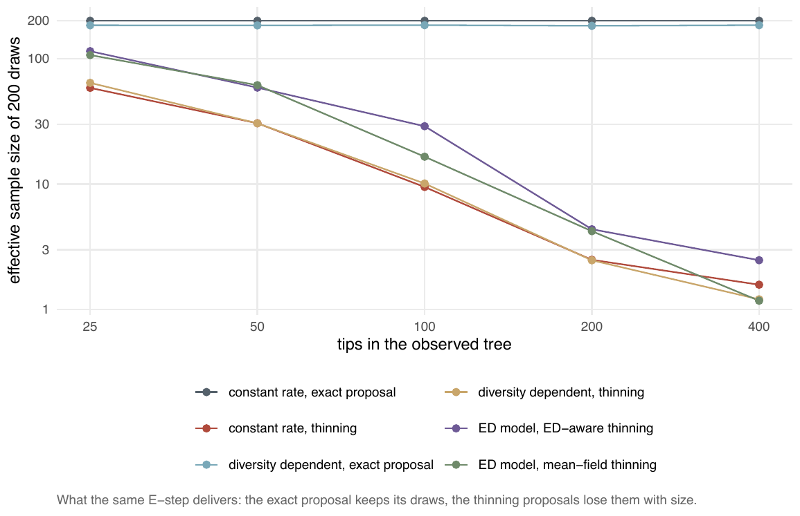

E4 — What one E-step costs, by model, proposal and tree size
| Status | complete |
| Package build | a87de1c (by the build audit; identical to a clean build except the random stream through both ned proposals) |
| Driver / analysis | sim/E4-cost.R; figures by sim/figures.R |
| Data | results/E4/cost.csv (150 rows); results/E4/cost-bED015.csv (the \(\beta\)_ED = -0.15 attempt, not the one quoted) |
Question
Claim C5: cost grows with the augmented tree, and the paper should give the wall-clock a user can expect by model, sampler and size. The fits of E1-E3 mix hosts, workers and stopping, so a dedicated sweep measures one E-step under identical conditions.
Design
| parameter | value | meaning |
|---|---|---|
| tips | 25, 50, 100, 200, 400, exactly (TreeSim::sim.bd.taxa) |
|
| trees | 5 per size | |
| generating process | constant rate, turnover 0.2, complete sampling | the design said turnover 0; the driver uses 0.2 because a turnover of zero leaves nothing to augment |
| rates for the E-step | \(\lambda\)0 = log(n/2)/(T(1 - \(\varepsilon\))), \(\mu\)0 = \(\varepsilon\)\(\lambda\)0, T = 10 | |
| models / proposals | cr: surrogate and thinning; dd: surrogate and thinning (\(\beta\)N = -\(\lambda\)0/(4n)); ned: mean-field and ED-aware thinning (\(\beta\)_ED = -0.05\(\lambda\)0) |
|
| draws | one E-step of 200 | |
| threads | 1 | |
| recorded | seconds, ESS, median and maximum augmented-tree size |
At \(\beta\)_ED = -0.15\(\lambda\)0 (cost-bED015.csv) the ned E-step failed on 25 of 50 runs ("maxN exceeded … zero weights": the linear link clips an observed event to rate zero on half the trees), so the sweep was rerun at -0.05.
Pre-set rule
Descriptive: medians and 90th percentiles per (n, model, sampler). No threshold.
Results
Median seconds for one E-step of 200 draws (90th percentile in brackets):
| model / proposal | 25 | 50 | 100 | 200 | 400 tips |
|---|---|---|---|---|---|
cr surrogate |
0.30 (0.45) | 0.50 (0.59) | 0.90 (1.28) | 2.08 (2.12) | 3.95 (4.76) |
cr thinning |
0.062 (0.074) | 0.080 (0.091) | 0.129 (0.178) | 0.343 (0.442) | 0.842 (1.43) |
dd surrogate |
0.25 (0.31) | 0.36 (0.42) | 0.59 (0.66) | 1.03 (1.07) | 2.03 (2.16) |
dd thinning |
0.059 (0.074) | 0.076 (0.085) | 0.143 (0.150) | 0.314 (0.418) | 0.818 (1.23) |
ned ED-aware thinning |
0.073 (0.29) | 0.114 (0.13) | 0.264 (0.33) | 0.892 (0.98) | 3.02 (4.35) |
ned mean-field thinning |
0.068 (0.17) | 0.098 (0.11) | 0.190 (0.24) | 0.594 (0.65) | 1.73 (2.51) |
The augmented tree has a median 36-38 nodes at 25 tips and 581-627 at 400. The surrogate proposal costs 4.7-7.0 times the thinning one under cr and 2.5-4.7 times under dd at the same size; the ED-aware proposal 1.06-1.75 times the mean-field one. Two of 150 runs failed (ned at 25 tips, both thinning variants, "maxN exceeded").
What the same E-step delivers (median ESS of 200 at 25-400 tips): cr surrogate 200 at every size, cr thinning 58, 31, 9.5, 2.5, 1.6; dd surrogate 182-185, dd thinning 64, 30, 10.1, 2.5, 1.2; ned ED-aware 115, 59, 29, 4.4, 2.5; ned mean-field 107, 61, 16.5, 4.2, 1.2.

cr and dd.
Conclusion
Descriptive rule: met (the table is the deliverable). One E-step costs 0.06-4 seconds from 25 to 400 tips across the six pairs, single-threaded. The record's sentence that the surrogate proposal costs "3-10x" the thinning one does not match the data: the ratio is 4.7-7.0 under cr and 2.5-4.7 under dd. Read with the effective sample, the cheaper thinning E-step buys fewer than 10 usable draws from 100-200 tips, so per effective draw (seconds over median ESS, computed from the two tables above) the surrogate is the cheaper proposal under cr from 100 tips (0.0045 against 0.014 s) and the thinning one only at 25 tips (0.0011 against 0.0015 s). E4 does not give the cost of a whole fit: that is set by the number of iterations and, for lineage-level models, by the starting point (E15); per-fit costs are in S and on the E15 figure.